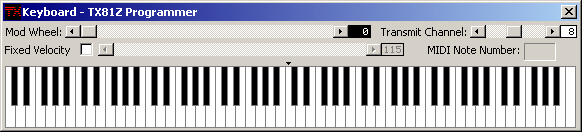

This is virtual keyboard type of thing. Click n Play.
You can set the mod wheel setting.
You can set the transmit channel if you're working with a multiple channel performance. The channel on the keyboard is completely separate from the normal editing channel set in the MIDI Setup... dialog.
You can check Fixed Velocity and manually set the velocity of the keys. If it is not checked, then the velocity is derived from the vertical position of the mouse pointer on the keys. When the pointer is at the very top, the velocity is zero. When the pointer is at the very bottom, the velocity is 127.
You can use the shift key as a sustain pedal, or you can use the right mouse button to hold the keys down indefinitely. Click on them again with the right button to release them.
The system menu of the window has a Stay On Top option to keep the keyboard on top of other windows.